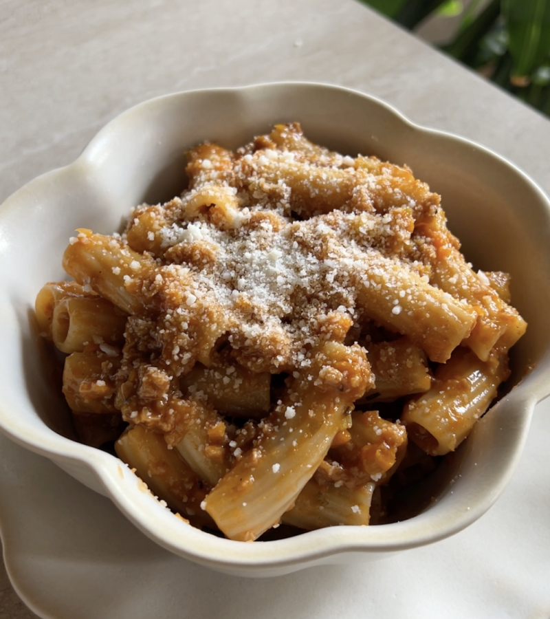

Home
Pasta with seitan ragù

Description
This seitan ragù has a taste and consistency very similar to the original. I recommend you prepare it and have even the most skeptical try it, I'm sure they'll love it!
Ingredients
- 180g Pasta of your choice
- 1/2 Celery stick
- 1/2 Carrot
- 1/4 Onion
- 1/2 Seitan block
- 100g Tomato puree
- 500ml Hot water
- q.b. EVO oil
- 1/2 Tablespoon Soy sauce
- q.b Chopped rosemary
- q.b Salt
- q.b Grated vegetable
Steps
- Coarsely chop the celery, carrot, onion and seitan and blend them for a few seconds in a blender.
- Take a large pan, add plenty of oil, chopped rosemary and the mix of vegetables and seitan obtained. Salt and cook for a few minutes.
- Add the tomato puree and hot water and continue cooking, stirring occasionally. Towards the end, add a spoonful of soy sauce.
- Cook your favorite pasta in a pot with plenty of salted water, for the time indicated on the package. Once ready, drain it and pour it directly into the pan, together with the seitan ragù, mixing well.
- Servite la pasta e terminate con un po’ di grattugiato vegetale.